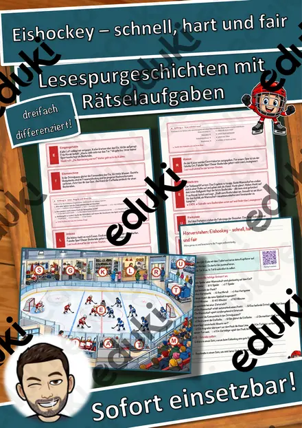
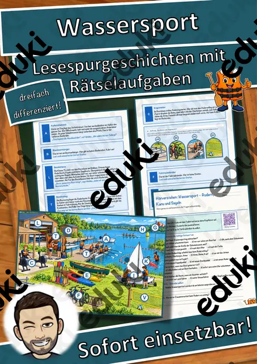
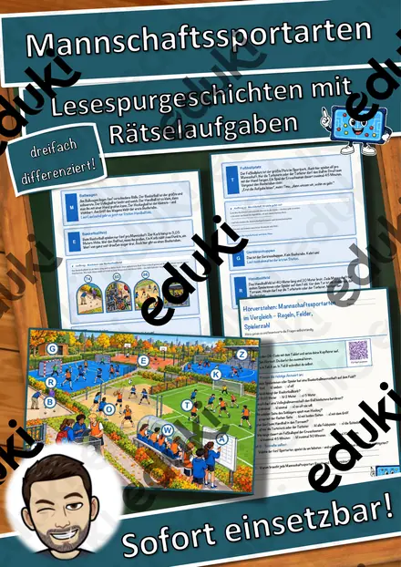
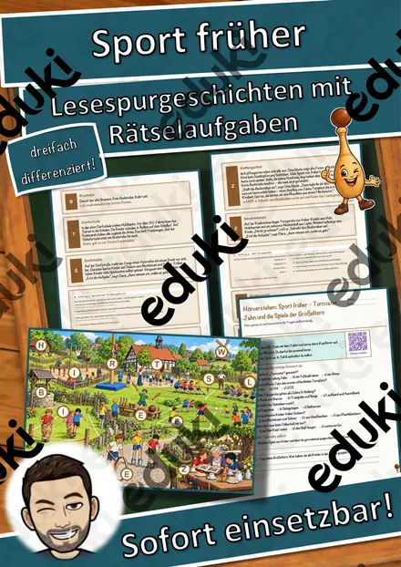
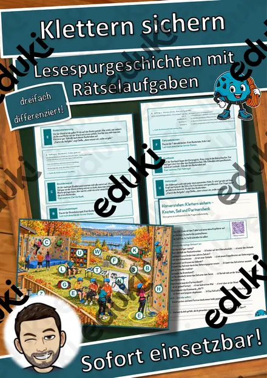
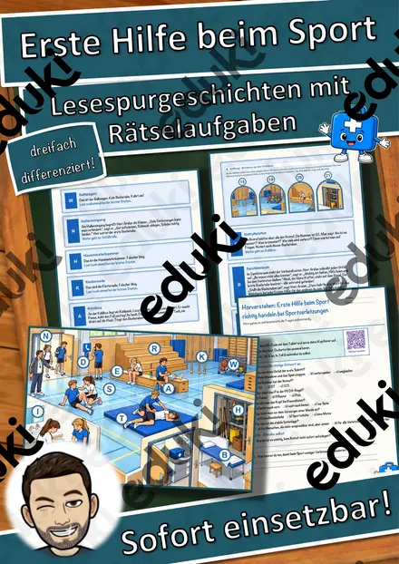
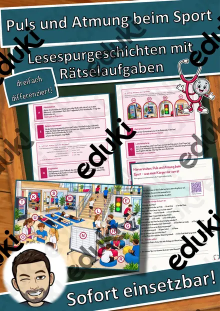

Warum gibt es Kriege? - Homeschooling
Mit diesem Material erhalten Sie ein Arbeitsblatt, geeignet zur Heimarbeit, Homeschooling, Schulschließung zum Thema: "Warum gibt es Kriege?" inkl. Lösung. Warum gibt es eigentlich immer wieder Kämpfe und Gewalt? Dieses Arbeitsblatt (auch geeignet für die Heimarbeit und zum Homeschooling während der Schulschließungen auf Grund des Coronavirus) klärt mit Hilfe eines Videos diese Frage.
FachSport
KlasseKl. 6–7
SchulformSek I Mittlere Schulform
MaterialartArbeitsblätter, Unterrichtsreihen, Merkblätter, Stationenlernen
Ähnliche Materialien

Was bringt Bewegung dem Körper? - Homeschooling

Eishockey – schnell, hart und fair – Lesespurgeschichte mit Rätselaufgaben (Klasse 7)

Wassersport – Rudern, Kanu und Segeln – Lesespurgeschichte mit Rätselaufgaben (Klasse 7)

Mannschaftssportarten im Vergleich – Regeln, Felder, Spielerzahl – Lesespurgeschichte mit Rätselaufgaben (Klasse 7)

Sport früher – Turnvater Jahn und die Spiele der Großeltern – Lesespurgeschichte mit Rätselaufgaben (Klasse 6)

Klettern sichern – Knoten, Seil und Partnercheck – Lesespurgeschichte mit Rätselaufgaben (Klasse 7)

Erste Hilfe beim Sport – richtig handeln bei Sportverletzungen – Lesespurgeschichte mit Rätselaufgaben (Klasse 7)
